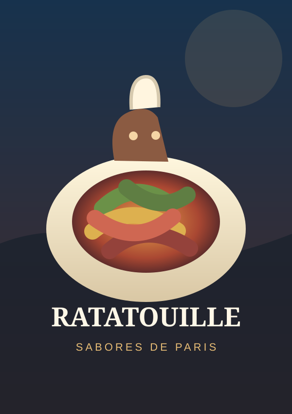
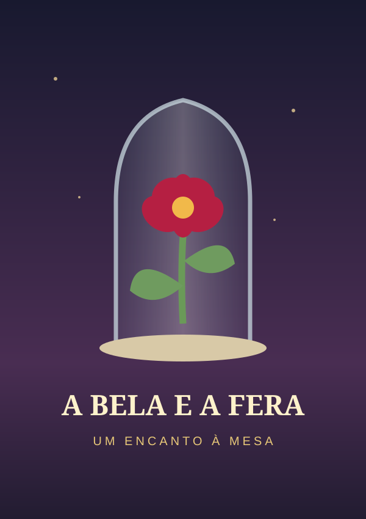
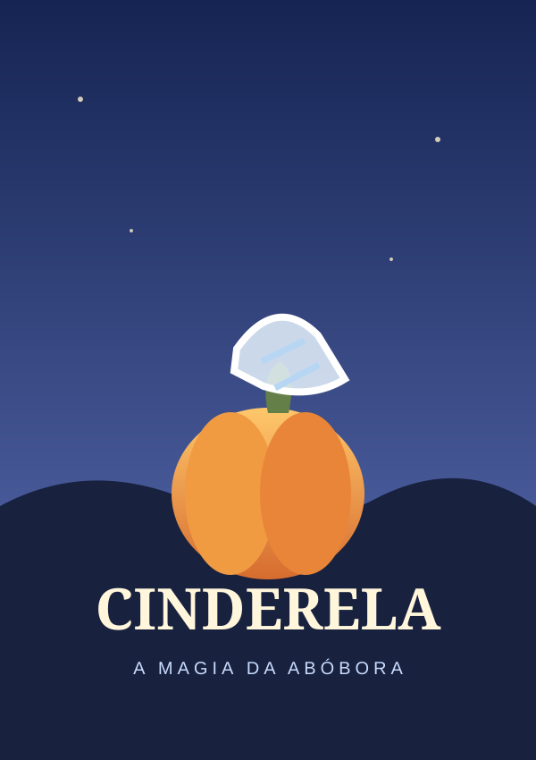
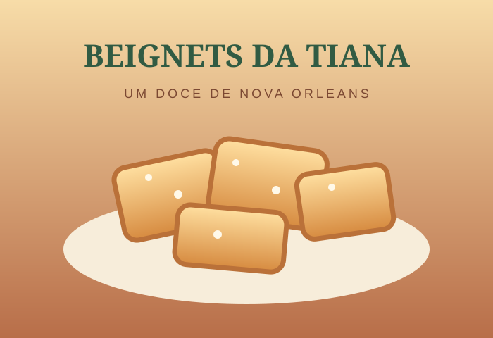
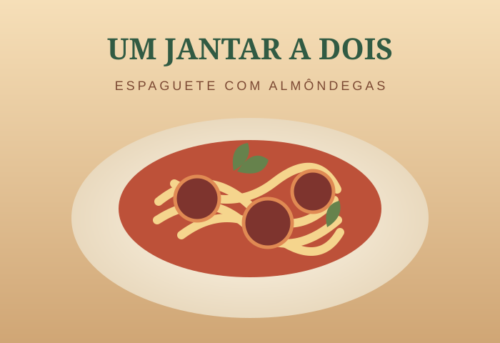
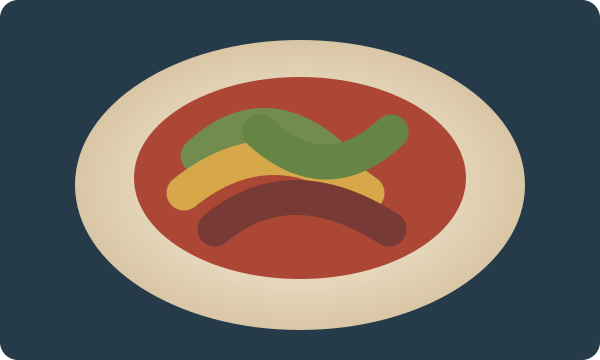

Receitas inspiradas por grandes histórias: escolha um filme para explorar sua cena ou abra uma receita para cozinhar.
Explore as cenas que despertam o apetite.

Pixar · FrançaO prato que conquistou o crítico Anton Ego.

Disney · CasteloUma receita delicada para um jantar encantado.

Disney · Conto de fadasUma transformação mágica em prato de outono.
Abra uma receita para ver ingredientes e modo de preparo.

A Princesa e o Sapo · DoceQuadradinhos fofos de massa frita com açúcar.

A Dama e o Vagabundo · MassaUm clássico italiano para compartilhar.
Bao · Cozinha asiáticaMassa macia com recheio temperado.
Não encontrei receitas ou filmes com esse termo. Tente outra busca.
Contexto na Narrativa: Este é o exato momento em que o rigoroso crítico Anton Ego prova a receita camponesa preparada pelo rato Remy. Ao dar a primeira mordida, a caneta cai de sua mão e ele é transportado para as memórias afetivas de sua infância no interior da França.

Sirva acompanhado de um vinho tinto leve (Pinot Noir) e pão rústico.
Filme: A Bela e a Fera (1991)
Uma receita que remete ao universo encantado da casa do castelo, com a mesma lógica de associação afetiva e memória sensorial do Ratatouille.
Filme: Cinderela (1950)
A transformação do objeto comum em alimento imaginário, criando uma ponte entre fantasia e memória culinária, em um elo associativo com a narrativa do Ratatouille.
Inspirados nos doces macios e dourados associados à cozinha de Nova Orleans em A Princesa e o Sapo.
Uma receita para compartilhar, inspirada pelo jantar de A Dama e o Vagabundo.
Uma receita caseira de bolinhos recheados inspirada pelo curta Bao.